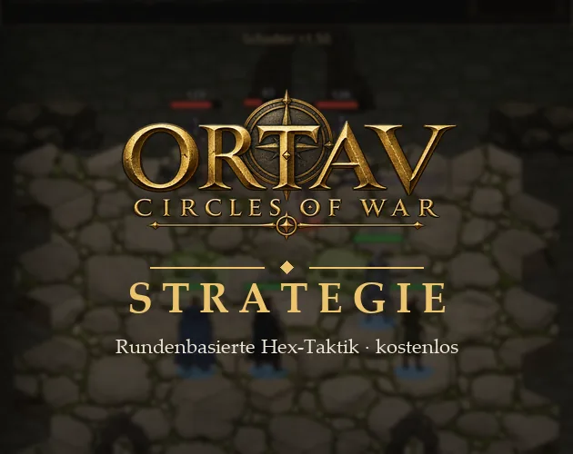
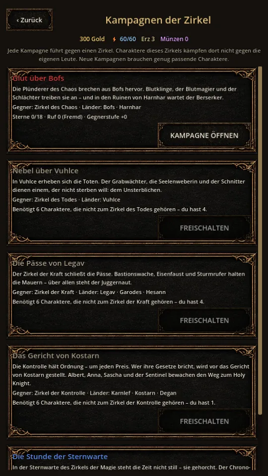
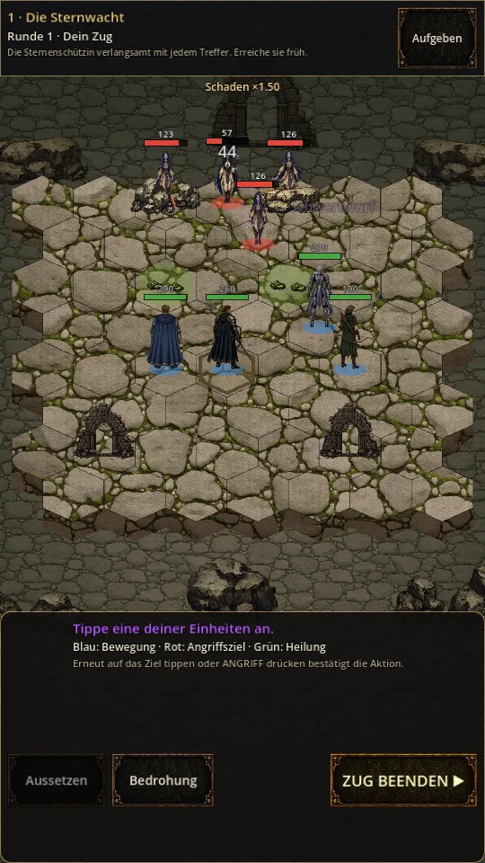
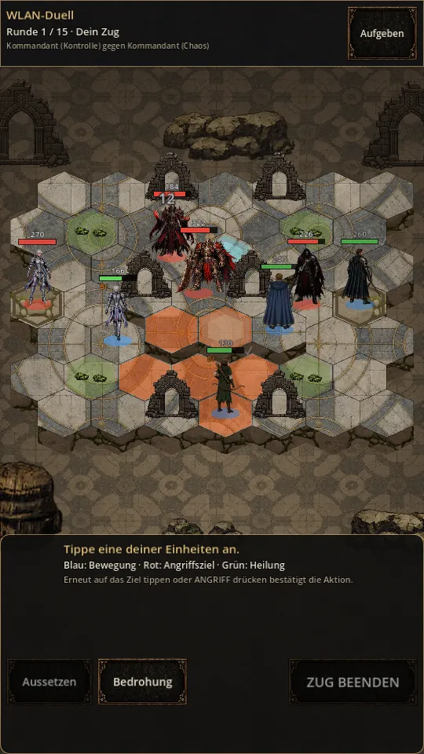

Windows
PC
Eine einzelne Datei, keine Installation: herunterladen und starten.
Beim ersten WLAN-Duell fragt Windows nach dem Netzwerkzugriff – „Private Netzwerke“ erlauben.
Für Windows ladenOrtav selbst erleben: Zwei Spiele entstehen in dieser Welt. Ortav Strategie kannst du schon heute kostenlos spielen – das größere Hauptspiel ist noch in Arbeit.

Kostenlos · Free-to-Play
Prototyp / Early AccessVersion 0.6.3
Rundenbasierte Hex-Taktik im Universum von Ortav: Circles of War. Die Zirkel der Götter ringen um die Herrschaft über Ortav: Stell dein Team aus Helden und Einheiten zusammen, führe es durch die Kampagnen der Zirkel und sammle Turmhelden – Zug um Zug, Feld um Feld.
Ein kostenlos spielbarer Prototyp, der mit jedem Update wächst. Komplett offline, gebaut für das Hochformat am Handy.
Auf itch.io spielen & herunterladenWindows
Eine einzelne Datei, keine Installation: herunterladen und starten.
Beim ersten WLAN-Duell fragt Windows nach dem Netzwerkzugriff – „Private Netzwerke“ erlauben.
Für Windows ladenAndroid
Die APK-Datei herunterladen und öffnen.
Android fragt einmal nach „Unbekannte Apps installieren“ – für deinen Browser bzw. Dateimanager erlauben.
Für Android ladenBrowser · iPhone
Ohne Download auf der itch.io-Seite spielen.
Am iPhone in Safari öffnen und über „Teilen“ → „Zum Home-Bildschirm“ hinzufügen – dann startet es wie eine App. Mit „Spielstand sichern“ im Hauptmenü sicherst du deinen Fortschritt.
Im Browser spielenWLAN-Duell: Handy gegen Handy oder PC im selben WLAN – mit Android und PC. Im Browser geht es nicht, weil Browser keine Spiele im lokalen Netz eröffnen dürfen. Beide Geräte brauchen dieselbe Version.

Mit Story-Briefings: Kontrolle, Chaos, Tod, Kraft und Magie.

Turmhelden sammeln, Ausrüstung schmieden, Arena, Ansturm und Raids.

Zwei Geräte im selben WLAN treten gegeneinander an.
Fehlerbehebungen für Handys: Wischen durch Listen löst keine Knöpfe mehr aus, nur ein kurzes Tippen zählt als Klick. iPhone (Browser): Ton funktioniert jetzt zuverlässiger – auch mit Stumm-Schalter ab iOS 17; falls es still bleibt, einmal ins Spiel tippen.
Neuer Knopf „Spielstand sichern“ im Hauptmenü. Ein Tipp speichert sofort; im Browser bittet das Spiel darum, den Spielstand dauerhaft aufzuheben, und am iPhone erscheint der Tipp, das Spiel über den Home-Bildschirm zu starten. Dazu ein Sicherungscode: kopieren, z. B. in den Notizen aufheben und jederzeit wieder eingeben – auch auf einem anderen Gerät (iPhone, Android, PC).
Erste öffentliche Version auf itch.io: Zirkel-Kampagnen (Kontrolle, Chaos, Tod, Kraft, Magie), Turmhelden, Arena, Ansturm, Raids, Ausrüstung und neu das WLAN-Duell für Android und PC.
Welt, Figuren und Spielidee stammen vom Autor. Grafik, Figuren und Musik sind mit KI-Werkzeugen erstellt (Ludo AI, ChatGPT/Codex, Suno). Die Soundeffekte stammen aus gemeinfreien CC0-Paketen (Kenney, OpenGameArt); gebaut mit der Godot Engine.
Das Hauptspiel befindet sich gerade im Feintuning. Es spielt im hundertjährigen Krieg um Ortav, der nach dem großen Konflikt-Konklave beginnt. Sobald es so weit ist, findest du es hier.
Mehr folgt in Kürze